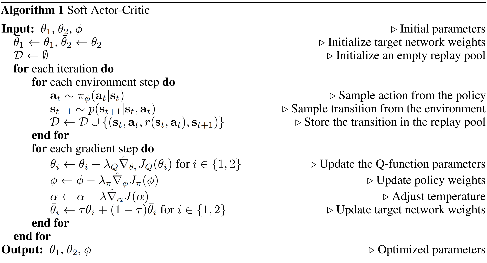

Maximum Entropy RL（MERL）
为了防止策略网络输出的概率集中在一个动作上，平衡探索性能，可以通过熵来衡量策略分布的不确定性：
H(π∣s)=−Ea∼π(⋅∣s)lnπ(a∣s)=−a∑π(a∣s)lnπθ(a∣s)
原始的 RL 问题的优化目标为：
J(π)=Es0∼b0(⋅)Ea0∼π(0)(⋅∣s0)Es1∼p(⋅∣s0, a0)Ea1∼π(1)(⋅∣s1)⋯EsT∼p(⋅∣sT−1, aT−1)EaT∼π(T)(⋅∣sT)[t=0∑TγtR(st, at)]
在最大熵 RL 框架下，优化目标加入了熵正则项来增强探索程度，同时减少陷入局部最优的可能性：
Ω(π)=Es0∼b0(⋅)Ea0∼π(0)(⋅∣s0)Es1∼p(⋅∣s0, a0)Ea1∼π(1)(⋅∣s1)⋯EsT∼p(⋅∣sT−1, aT−1)EaT∼π(T)(⋅∣sT)[t=0∑TγtH(π∣st)]=t=0∑TγtEs0Ea0Es1Ea1⋯Est[H(π∣st)]=t=0∑TγtEs0Ea0Es1Ea1⋯Est[−Eat∼π(⋅∣st)lnπ(at∣st)]=−t=0∑TγtEs0Ea0Es1Ea1⋯EstEat[lnπ(at∣st)]=−Es0Ea0Es1Ea1⋯EsTEaT[t=0∑Tγtlnπ(at∣st)]
总体优化目标为：
JH(π)=J(π)+αΩ(π)=Es0Ea0Es1Ea1⋯EsTEaT[t=0∑Tγt(R(st, at)−αlnπ(at∣st))]

Soft Bellman Expectation Equation
为了方便后续推导，定义带熵正则的动作价值函数为：
qH(t)(st, at)=Est+1Eat+1⋯EsTEaT[τ=t∑Tγτ−tR(sτ, aτ)−ατ=t+1∑Tγτ−tlnπ(aτ∣sτ)]
以上动作价值的定义中没有加入 lnπ(at∣st) 项，原因是在状态 st 下给动作 at 后该项失去了指导策略熵提升的作用。类似地，定义带熵正则的状态价值函数为：
vH(t)(st)=EatEst+1Eat+1⋯EsTEaT[τ=t∑Tγτ−tR(sτ, aτ)−ατ=t∑Tγτ−tlnπ(aτ∣sτ)]
通过定义可以将二者进行展开，得到 MERL 下的贝尔曼期望方程（soft）：
qH(t)(st, at)=R(st, at)+γEst+1[vH(t+1)(st+1)]vH(t)(st)=αH(π∣st)+Eat[qH(t)(st, at)]
在无限期规划下可以重写为：
qH(s, a)=R(s, a)+γEs′[vH(s′)]vH(s)=αH(π∣s)+Ea[qH(s, a)]
在该定义下的贝尔曼期望方程（soft）算子 Lπ:Q↦Q 为：
Lπ{qH}=R(s, a)+γEs′[vH(s′)]=R(s, a)+γEs′Ea′[qH(s′, a′)−αlnπ(a′∣s′)]
利用类似的方法可以证明该算子为压缩映射，贝尔曼期望方程（soft）存在唯一解。
Soft Bellman Optimal Equation
在有限期规划中 t 时间步下，利用动态规划的思想，得到当前的最优策略和最优动作价值函数之间的关系：
π⋆(t)(⋅∣s)=πargmax[αH(π∣s)+Ea∼π(⋅∣s)q⋆(t)(s, a)]=πargmaxEa∼π(⋅∣s)[q⋆(t)(s, a)−αlnπ(a∣s)]
考虑优化问题
pmaxx∑p(x)[ϕ(x)−αlnp(x)]s.t.x∑p(x)=10≤p(x)≤1⇒pminx∑p(x)[αlnp(x)−ϕ(x)]s.t.x∑p(x)−1=0−p(x)≤0p(x)−1≤0
可以看出目标函数和不等式约束函数均为凸函数，并且等式约束函数为仿射变换，构造拉格朗日函数：
L(p, λ, μ, ν)=x∑p(x)[αlnp(x)−ϕ(x)]+λ[x∑p(x)−1]+x∑−μ(x)p(x)+x∑ν(x)[p(x)−1]
最优分布需要满足：
∂p(x)∂L=α[lnp(x)+1]−ϕ(x)+λ−μ(x)+ν(x)=0
解得：
p⋆(x)=exp[α1(ϕ(x)−λ+μ(x)−ν(x))−1]∝exp[α1ϕ(x)]
在最优分布下的，目标函数取到最大值：
J⋆=x∑p⋆(x)[ϕ(x)−αlnp⋆(x)]=x∑p⋆(x)[ϕ(x)−ϕ(x)+αlnZ]=αlnZ=softmaxαϕ(x)
其中，归一化因子 Z=∑xexp[α1ϕ(x)]。因此当前的最优策略为：
π⋆(t)(a∣s)=Z1exp[α1q⋆(t)(s, a)]Z=a∑exp[α1q⋆(t)(s, a)]
进而得到最优状态价值函数和最优动作价值函数之间的关系，即贝尔曼最优方程（soft）：
v⋆(t)(s)=αH(π⋆(t)∣s)+Ea∼π⋆(t)(⋅∣s)q⋆(t)(s, a)=softmaxαq⋆(t)(s, a)
在该定义下的贝尔曼最优方程（soft）算子 L:Q↦Q 为：
L{qH}=R(s, a)+γEs′∼p(⋅∣s, a)[softmaxαqH(s, a)]=R(s, a)+γEs′∼p(⋅∣s, a)[αlnb∑exp[α1qH(s, b)]]
为了证明 L 是一个压缩映射，首先证明：
exp[α1q1(s, a)−α1q2(s, a)]≤exp[α1s, amax∣∣∣∣q1(s, a)−q2(s, a)∣∣∣∣]=exp[α1∥∥∥∥q1−q2∥∥∥∥∞]
因此：
exp[α1q1(s, a)]≤exp[α1q2(s, a)+α1∥∥∥∥q1−q2∥∥∥∥∞]
进而有：
softmaxαq1(s, a)=αlna∑exp[α1q1(s, a)]≤αlna∑exp[α1q2(s, a)+α1∥∥∥∥q1−q2∥∥∥∥∞]=αlnexp[α1∥∥∥∥q1−q2∥∥∥∥∞]+αlna∑exp[α1q2(s, a)]=∥∥∥∥q1−q2∥∥∥∥∞+softmaxαq2(s, a)
通过类似的方法可以得到：
softmaxαq1(s, a)≥−∥∥∥∥q1−q2∥∥∥∥∞+softmaxαq2(s, a)
因此：
∣∣∣∣L{q1}(s, a)−L{q2}(s, a)∣∣∣∣=∣∣∣∣∣∣γs′∑p(s′∣s, a)[softmaxαq1(s, a)−softmaxαq2(s, a)]∣∣∣∣∣∣≤γs′∑p(s′∣s, a)∣∣∣∣softmaxαq1(s, a)−softmaxαq2(s, a)∣∣∣∣≤γs′∑p(s′∣s, a)∥∥∥∥q1−q2∥∥∥∥∞=γ∥∥∥∥q1−q2∥∥∥∥∞
最终证明 L 是一个压缩映射 ∥L{q1}−L{q2}∥∞≤γ∥q1−q2∥∞，贝尔曼最优方程（soft）存在唯一解 q⋆，即无限期规划下的最优动作价值函数，同时在无限期规划下的最优策略满足：
π⋆(a∣s)=Z1exp[α1q⋆(s, a)]=exp[α1q⋆(s, a)−α1v⋆(s)]∝exp[α1q⋆(s, a)]
通过和 Q-Learning 类似的方法，可以通过时序差分实现 Soft Q-Learning 算法。
SAC（Soft Actor-Critic）
在参数化策略后可以通过类似的方法计算熵正则项的梯度：
∇θΩ(θ)=−∇θs0∑a0∑s1∑a1∑⋯sT∑aT∑[b0(s0)t=0∏Tπθ(at∣st)t=1∏Tp(st∣st−1, at−1)t=0∑Tγtlnπθ(at∣st)]=−s0∑a0∑s1∑a1∑⋯sT∑aT∑[b0(s0)(∇θt=0∏Tπθ(at∣st))t=1∏Tp(st∣st−1, at−1)t=0∑Tγtlnπθ(at∣st)]−s0∑a0∑s1∑a1∑⋯sT∑aT∑[b0(s0)t=0∏Tπθ(at∣st)t=1∏Tp(st∣st−1, at−1)t=0∑Tγt∇θlnπθ(at∣st)]=−Es0Ea0Es1Ea1⋯EsTEaT[(t=0∑T∇θlnπθ(at∣st))⋅(t=0∑Tγtlnπθ(at∣st))+t=0∑Tγt∇θlnπθ(at∣st)]
梯度中的后一部分可以化简为 0：
t=0∑TγtEs0Ea0Es1Ea1⋯Est0Eat∇θlnπθ(at∣st)=0
通过和策略梯度中类似的方法，可以证明乘积因子 ∇θlnπθ(at∣st)lnπθ(aτ∣sτ) 在 t>τ 时的期望为 0：
Es0Ea0Es1Ea1⋯EsTEaT[∇θlnπθ(at∣st)lnπθ(aτ∣sτ)]=Es0Ea0Es1Ea1⋯Est[lnπθ(aτ∣sτ)0Eat∇θlnπθ(at∣st)]=0
最终将熵正则项的梯度化简为：
∇θΩ(θ)=−t=0∑TγtEs0Ea0Es1Ea1⋯EstEat[∇θlnπθ(at∣st)Est+1Eat+1⋯EsTEaTτ=0∑Tγτ−tlnπθ(aτ∣sτ)]
结合 J(θ) 的策略梯度，可以将总体优化目标函数的梯度写作：
∇θJH(θ)=t=0∑TγtEs0Ea0Es1Ea1⋯EstEat[∇θlnπθ(at∣st)Est+1Eat+1⋯EsTEaTτ=t∑Tγτ−tR(sτ, aτ)]−αt=0∑TγtEs0Ea0Es1Ea1⋯EstEat[∇θlnπθ(at∣st)Est+1Eat+1⋯EsTEaTτ=0∑Tγτ−tlnπθ(aτ∣sτ)]=t=0∑TγtEs0Ea0Es1Ea1⋯EstEat[∇θlnπθ(at∣st)(qH(t)(st, at)−αlnπθ(at∣st))]⟶T→∞1−γ1Es∼νπθ(⋅)Ea∼πθ(⋅∣s)[∇θlnπθ(a∣s)(qH(s, a)−αlnπθ(a∣s))]
为了学习对 qH(s, a) 的近似，SAC 算法采用 critic 网络 qw(s, a) 并通过 TD 误差来指导网络参数的更新：
Lq(w)=2n1i=1∑n[qw(si, ai)−ri−γ(qw(si′, ai′)−αlnπθ(ai′∣si′))]2
其中，动作 ai′∼πθ(⋅∣si′)，同时为了切断自举并防止高估，可以使用两套 critic + 目标网络：
Lq(w)=2n1i=1∑n[qw(si, ai)−ri−γ(j∈{1, 2}minqwj−(si′, ai′)−αlnπθ(ai′∣si′))]2
自适应温度系数
由于原始的 SAC 算法对温度系数项 α 较为敏感，在有限期规划下将优化问题重写为带约束的形式：
π(0), π(1), ⋯, π(T)maxJ(π)=Es0∼b0(⋅)Ea0∼π(0)(⋅∣s0)Es1∼p(⋅∣s0, a0)Ea1∼π(1)(⋅∣s1)⋯EsT∼p(⋅∣sT−1, aT−1)EaT∼π(T)(⋅∣sT)[t=0∑TγtR(st, at)]s.t.∀ t:Es0∼b0(⋅)Ea0∼π(0)(⋅∣s0)Es1∼p(⋅∣s0, a0)Ea1∼π(1)(⋅∣s1)⋯Est∼p(⋅∣st−1, at−1)Eat∼π(t)(⋅∣st)[−lnπ(t)(at∣st)]≥H
目标函数的最大值可以被递归地分解为：
π(0), π(1), ⋯, π(T)maxJ(π)=π(0)max[Es0Ea0[R(s0, a0)]+γπ(1)max[Es0Ea0Es1Ea1[R(s1, a1)]+γπ(2)max(⋯)]]
其中每层的最大化操作都需要满足相应的约束，最内层的最大化操作为：
π(T)maxEs0Ea0Es1Ea1⋯EsTEaT[R(sT, aT)]s.t.Es0Ea0Es1Ea1⋯EsTEaT[−lnπ(T)(aT∣sT)]≥H
其中优化目标和约束条件均为凸函数，因此可以将带约束的最大化操作转换为相应的对偶问题：
α(T)minπ(T)maxEs0Ea0Es1Ea1⋯EsTEaT[R(sT, aT)−α(T)lnπ(T)(aT∣sT)−α(T)H]
其中，内层的 maxπ(T) 对应的最优策略 π⋆(T) 即温度系数 α(T) 下的最优策略（soft）：
π⋆(T)=π(T)argmaxEs0Ea0Es1Ea1⋯EsTEaT[R(sT, aT)−α(T)lnπ(T)(aT∣sT)−α(T)H]=π(T)(⋅∣sT)argmaxEaT∼π(T)(⋅∣sT)[q⋆(T)(sT, aT)−α(T)lnπ(T)(aT∣sT)]∝exp[α(T)1q⋆(T)(sT, aT)]
注意此处的 π⋆(T) 是 α(T) 的函数，进而得到最优温度系数：
α⋆(T)=α(T)argminEs0Ea0Es1Ea1⋯EsTEaT[R(sT, aT)−α(T)lnπ⋆(T)(aT∣sT)−α(T)H]=α(T)argminEs0Ea0Es1Ea1⋯EsTEaT∼π⋆(T)(⋅∣sT)[−α(T)lnπ⋆(T)(aT∣sT)−α(T)H]
将最优系数 α⋆(T) 及其对应的最优策略（soft）代入第二层的最大化操作中：
π(T−1)max{Es0Ea0Es1Ea1⋯EsT−1EaT−1[R(sT−1, aT−1)+γEsTEaT[R(sT, aT)−α⋆(T)lnπ⋆(T)(aT∣sT)]]−γα⋆(T)H}
最优动作价值函数（soft）满足：
q⋆(t)(st, at)=R(st, at)+γEst+1∼p(⋅∣st, at)Eat+1∼π⋆(t+1)(⋅∣st+1)[q⋆(t+1)(st+1, at+1)−αlnπ⋆(t+1)(a′∣s′)]
结合初始条件 q⋆(T)(sT, aT)=R(sT, aT)，可以将第二层最大化操作转化为：
π(T−1)maxEs0Ea0Es1Ea1⋯EsT−1EaT−1[q⋆(T−1)(sT−1, aT−1)]s.t.Es0Ea0Es1Ea1⋯EsT−1EaT−1[−lnπ(T−1)(aT−1∣sT−1)]≥H
通过相同的方法得到：
π⋆(T−1)=π(T−1)(⋅∣sT−1)argmaxEaT−1∼π(T−1)(⋅∣sT−1)[q⋆(T−1)(sT−1, aT−1)−α(T−1)lnπ(T−1)(aT−1∣sT−1)]α⋆(T−1)=α(T−1)argminEs0Ea0Es1Ea1⋯EsT−1EaT−1∼π⋆(T−1)(⋅∣sT−1)[−α(T−1)lnπ⋆(T−1)(aT−1∣sT−1)−α(T−1)H]
重复以上操作，即可得到每个规划时间步上的最优温度系数 α⋆(t) 以及对应的最优策略（soft）π⋆(t)。在参数化的策略和凸性假设下，可以通过对偶梯度下降的方式对截断的温度系数的目标函数进行求解：
J(α)=Ea∼πθ(⋅∣s)[−αlnπθ(a∣s)−αH]
